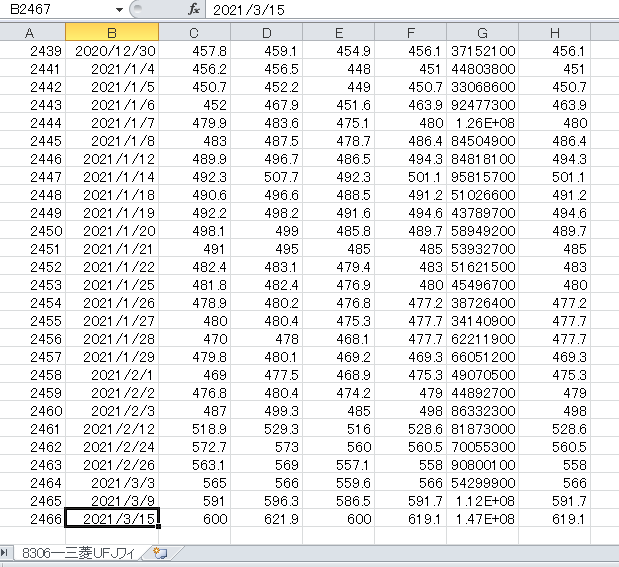

Portfolio
Menu
PHP
Python
Analytics、AWS
今後どうなっていきたいか
最新更新日：2021/03/10
回帰分析による株価の高値、安値予測
回帰分析による気温予測
で身に着けたことに、Webスクレイニングを付随して、
株式投資メモ
に記載されている個別銘柄データにプログラムからアクセスし
年別に異なるページに記載されている株式の値データを読み取り、すべての年データを結合してデータフレームにし、
そこから高値、安値に対して気温予測の際のように回帰分析を行っていきたいと思います。
これにより、予測安値付近で買い、予測高値付近で売る（または逆）を行うことができるかもしれません。
HPはこのような形でデータを記載しています。
上記のように、ひとまず2021年、2020年、2019年のデータを繰り返し取得し、それぞれデータを整えていきます。
整えたデータをreturnで返し、次の結合作業に移していきます。
今回は銘柄コード8306、三菱UFJフィナンシャルグループのデータで試してみました。
データを結合し、一度csvファイルとして出力し中身を確認してみることにしました。

2019年から2021年（データ取得時の最新データは3月15日）まで過不足なく取得できました。
この続きは随時更新します。
この予測が終わり次第、さらに長期的な予測が立てられるよう構成を考えていこうと思います。